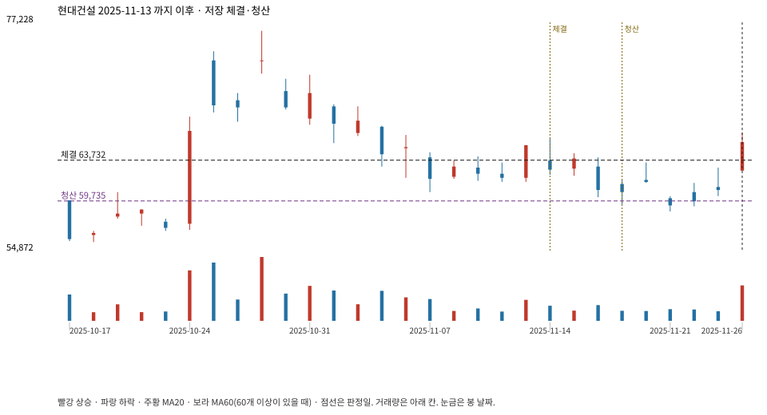

계좌를 다시 돌리지 않았다. 아래는 저장된 주문·체결·청산·비용·손익이다.

{
"case_id": "bec010de7e0ceb8f",
"status": "closed",
"trade": {
"symbol": "000720.KS",
"signal_date": "2025-11-13",
"quantity": 183,
"entry": 65200,
"stop": 59765,
"target": 76400,
"planned_risk": 1022936.6240024981,
"reserved_cash": 11943531.599999998,
"fill": {
"date": "2025-11-14",
"price": 63731.85,
"fee": 11662.928549999999
},
"exit": {
"date": "2025-11-19",
"price": 59735.1175,
"reason": "stop",
"net_pnl": -753996.5025524981,
"ambiguous_bar": false
}
},
"cost": "research fee 10bp each side, slippage 5bp; amounts below are the stored ledger, not a new run",
"chart": "c\/bec010de7e0ceb8f.svg"
}